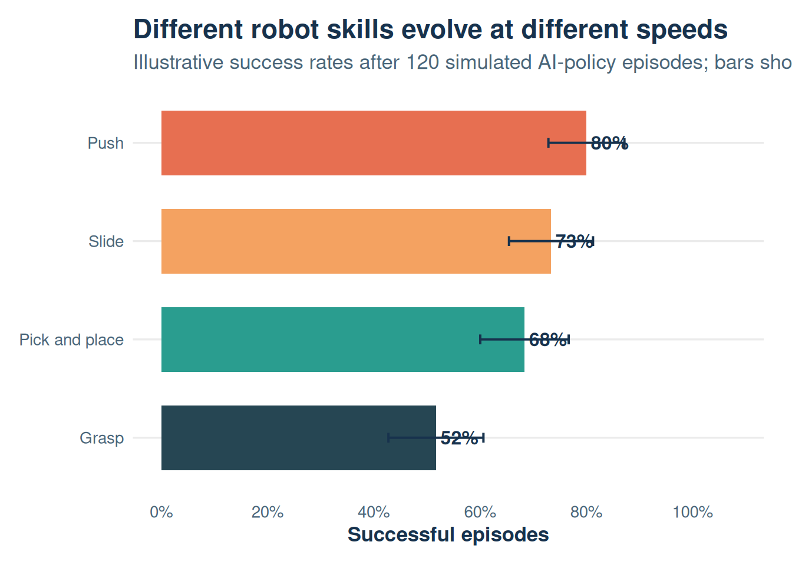
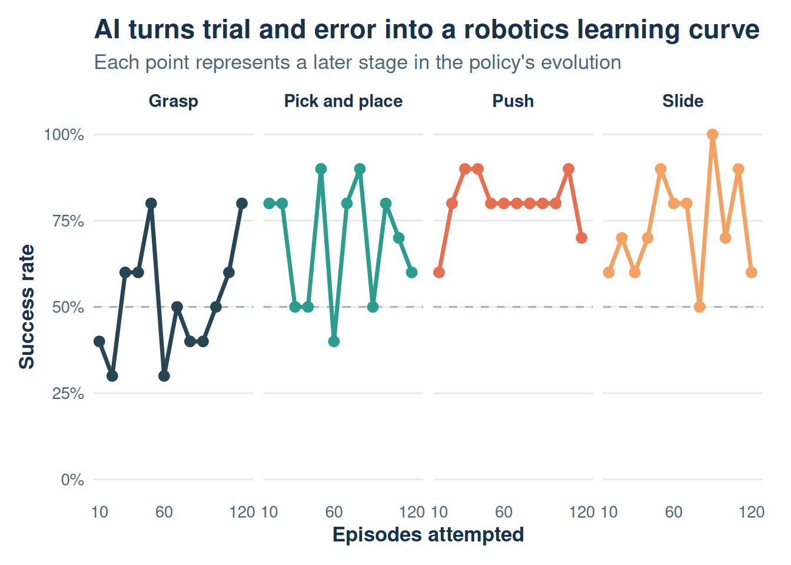

The evidence
What does progress look like?
Fetch and Hand environments make this evolution measurable. A simulation episode records actions and outcomes, allowing us to compare robot behaviors and watch success develop over repeated attempts.


Data note: These figures are a reproducible synthetic demonstration. The next project step is to replace the simulated episodes with real Fetch and Hand environment logs.